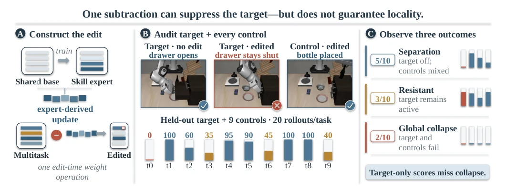
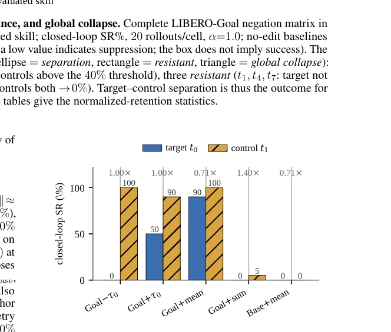
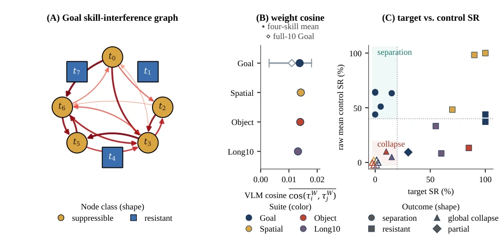
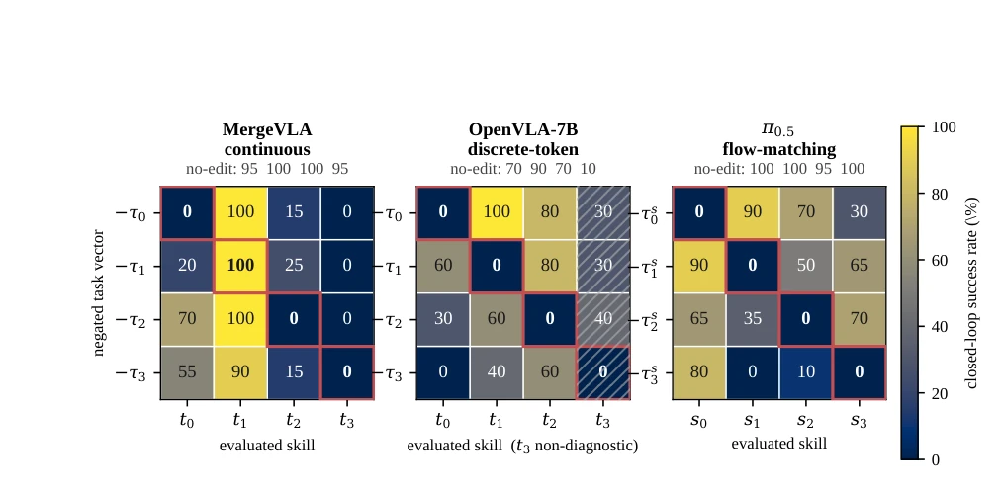
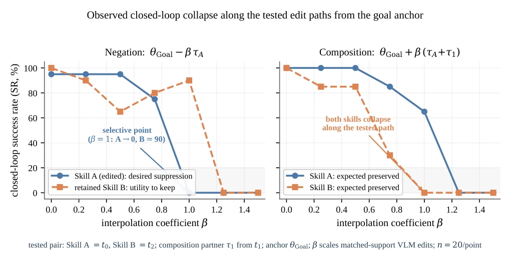

随着多任务视觉-语言-动作（VLA）策略的部署，从业者急需在不重新训练整个模型的情况下，移除某个不安全或过时的技能（如“禁止开门”）。现有的“任务算术”（Task Arithmetic）方法（Ilharco et al. 2023）提供了一种闭式解，即通过减去任务向量来编辑模型，理论上无需移除时的数据或梯度。然而，现有研究大多仅在静态标签（如图像分类）上验证了这种操作的“局部性”，即假设减去一个技能不会影响其他技能。在具身控制中，行为是动态闭环的，一个看似无害的权重扰动可能在长序列 rollout 中导致灾难性的连锁反应。现有的机器遗忘（Machine Unlearning）方法（如Bourtoule et al. 2021; Golatkar et al. 2020）通常需要保留集（retain set）和昂贵的训练计算，而最近的VLA移除工作（Ranjan and Polyzou 2026）仍依赖梯度。因此，缺乏一种针对VLA策略的、无需梯度的、闭环目标与控制审计，无法回答“移除一个技能是否会无声地破坏其他技能”这一关键安全问题。
—

Figure 1: A single edit-time subtraction removes the target skill, but its locality is fragile and heterogeneous. We derive an expert update from a single-skill expert and subtract it from a multitask VLA in one edit-time operation, then roll out the target and every control behavior. All frames are real MergeVLA LIBERO-Goal rollouts at α=0.75: the t0 target opens the drawer without the edit and fails after subtraction (same initial state), while a control skill still succeeds under the same edited policy (a deterministic lowest-index successful rollout, illustrative). The held-out strip gives the edited success rate of the target and all nine controls for this edit (target off; controls mixed). Across ten LIBERO-Goal skills the edit yields three regimes: five target–control separation row
Figure 2: Full ten-skill audit reveals separation, resistance, and global collapse. Complete LIBERO-Goal negation matrix in natural task order (row = negated τ i, column = evaluated skill; closed-loop SR%, 20 rollouts/cell, α=1.0; no-edit baselines above). Terracotta outlines mark the diagonal target cells (a low value indicates suppression; the box does not imply success). The right strip labels each row’s regime by color and shape (ellipse = separation, rectangle = resistant, triangle = global collapse): five target–control separation rows (target suppressed, controls above the 40% threshold), three resistant (t1, t4, t7: target not suppressed), and two global collapse (t8, t9: target and controls both →0%). Target–control separation is thus the outcome for half the Goal skills, not a un

Figure 3: The tested t0 outcomes depend on sign, anchor, and aggregate scale. Closed-loop SR of target t0 and con- trol t1 (20 rollouts/cell; relative perturbation norm ×∥τ 0∥ above each pair). Goal-anchored subtraction shows separation (0/100); the equal-norm addition is retained (50/90); the 0.71× goal-anchored mean is retained (90/100). The 1.4× goal-anchored sum nearly collapses the pair (0/5), whereas the base-anchored mean collapses both skills (0/0); full per- condition values are in Supp. Table S15.

Figure 4: Collateral damage is structured, whereas mean weight-space cosine does not track control survival. (A) Directed Goal interference graph on the 8-skill core (excluding the two global-collapse rows t8, t9): each edge i→j marks a ≥50-point control-SR drop from subtracting τ i, drawn only for source rows whose own target is suppressed. Resistant skills thus have no outgoing edges by construction: not because negating them is harmless, but because it fails to suppress their target and damages controls only via non-selective collapse (Supp. Table S4). Edge width/shade scale with the drop; node shape/color mark suppressible vs. resistant (t3 is the largest collateral hub); the full 10×10 matrix is Fig. 2. (B) Mean VLM task-vector cosine per suite: filled dots are the matched four-skill

Figure 5: Target suppression recurs across three action-head families, but control retention remains model-dependent. Rows subtract τ i; columns evaluate skills; red boxes mark target cells, and no-edit baselines appear above each matrix. MergeVLA t1 resists suppression; OpenVLA t3 is hatched because its baseline is 10%. Rollouts/cell: MergeVLA 20, OpenVLA 10 (diagonals 20), and π0.5 20. The π0.5 panel uses four different Goal tasks (mapping in Supp. Table S1). Absolute off-diagonal margins remain model-dependent at these rollout counts.

Figure 6: Observed closed-loop collapse along the tested edit paths from the goal anchor. Closed-loop success rate of the edited Skill A (t0, blue circles) and the retained Skill B (t2, orange squares) as we interpolate from θGoal along the negation direction −τ A (left) and the composition direction +(τ A+τ 1) (partner τ from t1) (right); 20 rollouts/point, single tested pair. Left (desired: suppress A, keep B): negation reaches a selective operating point at β=1.0: A→0%, B= 90%. Right (expected: preserve both skills): both collapse, with B falling before A, so the target is only suppressed after the other skill is already suppressed. The five-pair population is in Supp. Table S9, and the accompanying static-loss and sharpness measurements are correlational (Supp. § G).